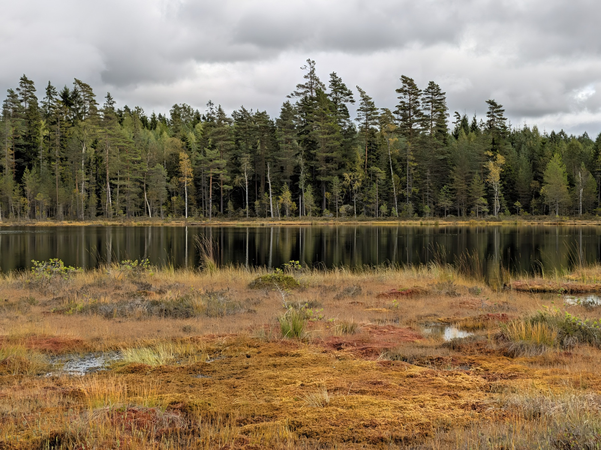
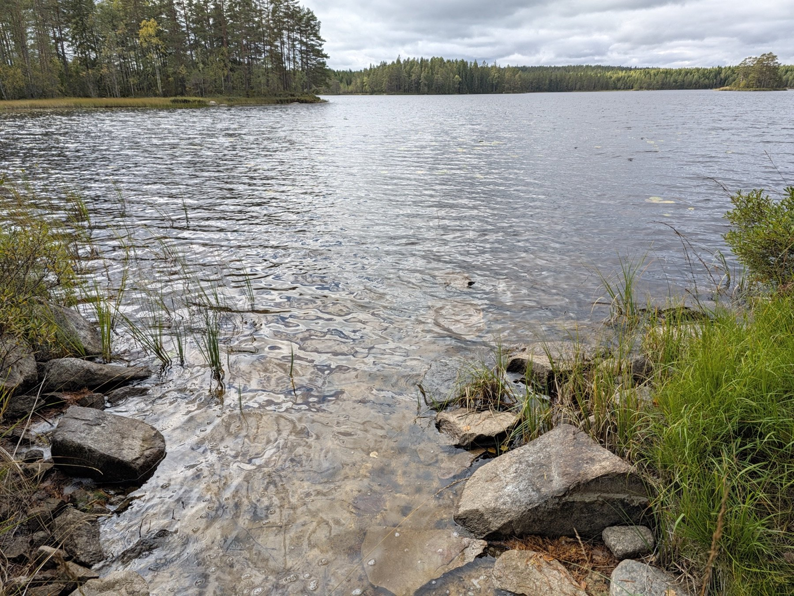
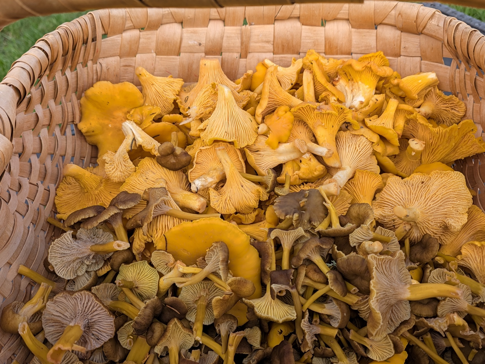
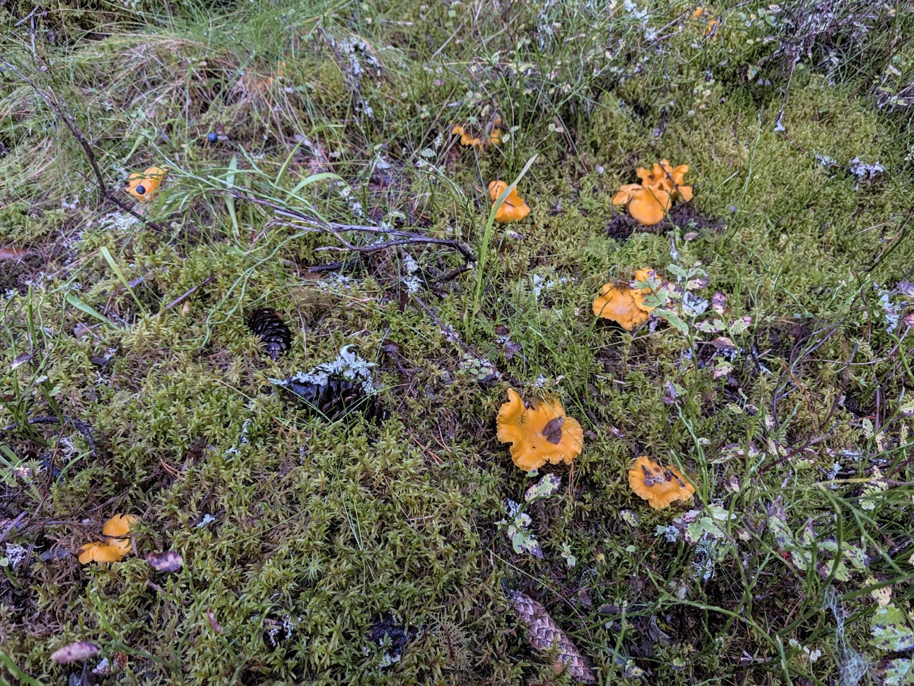
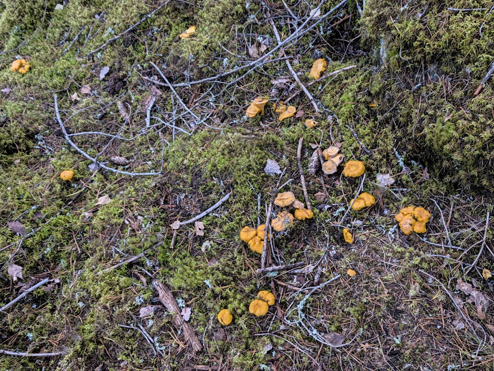
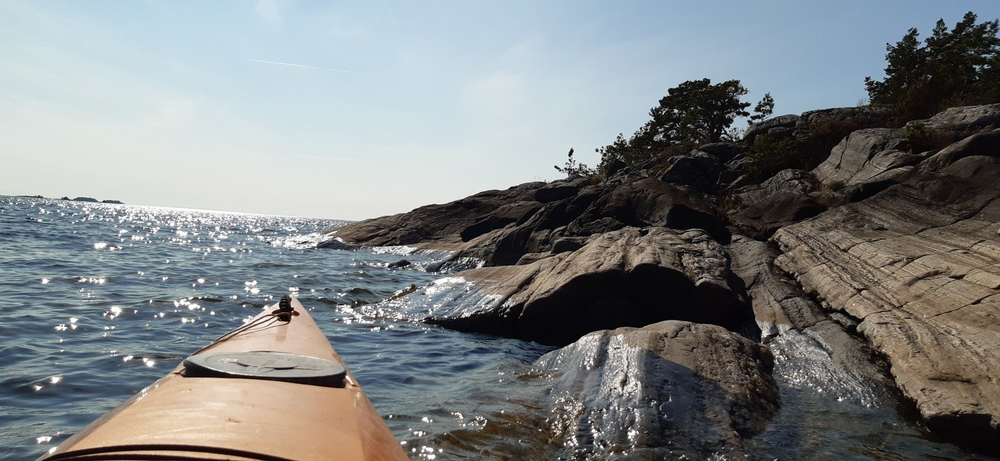
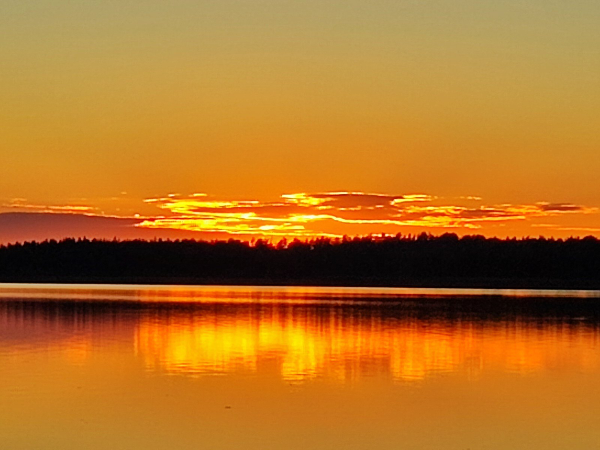

A trail. A conversation.
We walk in Värmland at your pace. Or sit down over coffee. You don’t need equipment or any knowledge of AI to start the conversation.

THE ADVENTURE / WALK & TALK WITH ANNA AT AiNNOVA
Four hours for your questions, your business and fresh ideas.
We walk, paddle or sit down together. No love of mushrooms or outdoor experience required.
BRING WHAT’S ON YOUR MIND
You run a business. You’re trying to keep up, make good decisions and understand what AI can actually do for you. It takes energy.
We choose something we enjoy doing and talk about what’s on your plate. A beautiful trail in Värmland is a good start. So is a bench and a flask of coffee. What drains you? What would you like to build? What can a machine handle, and where do you need your own judgement?
You don’t need a perfectly formed question. Bring whatever you’re puzzling over. We’ll start there.
SAME ANNA. NEW PERSPECTIVES.
We walk in Värmland at your pace. Or sit down over coffee. You don’t need equipment or any knowledge of AI to start the conversation.
Mushrooms when the forest offers them, kayaking when the water calls. Perhaps ice fishing in winter? We choose according to interests, weather and conditions. The ice must be safe, of course.
Prefer indoors or online? We can meet there too. What matters is having time to understand, experiment and discover how AI can help you.

MY MEETING ROOM HAS A BETTER VIEW.YOUR SOUNDING BOARD FOR EVERYDAY LIFE AND TECHNOLOGY
A well-read physicist, pattern spotter and AI builder in what I like to call Silicon Väse.
I think about where the tech giants are taking us — and help with what’s on your desk. We can talk about big tech’s power and your small business website on the same walk. Both are part of the real world.
I build with AI myself. Much of its value starts with understanding what you can ask for, what is worth doing and what standards to expect.
We don’t need to stay indoors to think ahead.
FOUR HOURS FOR YOU
We talk about AI in plain language, starting with your everyday work. You ask. We think it through. When it fits, we try the tools together.
We explore what’s getting in your way, where technology can lighten the load, what you need to learn and what you can get help with.
You get practical suggestions for your next steps. If you need a website, a tool or another solution built, we agree on that separately.
WHEN YOU CHOOSE THE MUSHROOM WALK
One for golden chanterelles. One for winter chanterelles. And a little extra bag for everything else we come across.
We leave room for discoveries. The forest decides what comes home with us.
And your cap, of course. We agree on the location and plan when you book.
You bring the food. I bring the guidance. Share something you enjoy with me. I eat everything — in the picnic basket.
Big questions, small worries and ideas that won’t leave you alone.



SAME CURIOSITY. A DIFFERENT VIEW.
Prefer a kayak to a mushroom basket? Join me on the water and talk about AI, your business and whatever you want to make sense of.
We paddle, stop ashore and explore your questions at your pace. When we want to try the tools, we do it during a break on land. You don’t need a fully formed brief.

Kayaks and buoyancy aids are available. Bring clothes for the weather, a waterproof bag for your phone, and a picnic for you and me.
Kayaking is one way to choose the Adventure: four hours with Anna at the package price below. We agree on location, equipment and details when you book, adapting to the weather and conditions. Prefer dry land? We can walk, meet in the studio or talk AI over table tennis or chess.
Talk paddling with Anna ↗
Here’s to doing things your own way — and not giving up ;)
THE ADVENTURE · HALF A DAY WITH ANNA
For business owners who want to learn about AI with a knowledgeable sounding board. We choose the activity, pace and place together. A walk, kayaking, mushrooms or a quiet moment in the studio — your questions are our starting point.
Same time, same commitment, same price. You’ll have to find your own mushrooms.
FOUR HOURS · YOUR QUESTIONS
For you. With Anna.
All prices exclude VAT.
Base price SEK 4,000. Current price confirmed when booking.
Call Anna to book ↗Contact me at ainnova.se ↗We agree on the date and details before confirming your booking. Bring your own picnic. Any development work is quoted separately.
IT STARTED ON AN AUTUMN DAY IN THE FOREST
I wanted to bring together what I love most: being outdoors, thinking freely and helping others understand what technology can do. That’s how the Adventure began.
That’s why the link still says “autumn in the forest” in Swedish. It stays as a little trace of the beginning. The ideas can keep growing all year round.
This website is also my living workshop. We experiment with code, build on it and show what’s possible. Prices from one shared spreadsheet are one example. Have an idea of your own? Bring it along.
Here’s to doing things your own way — and not giving up ;)